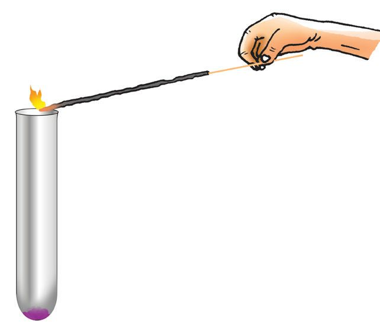
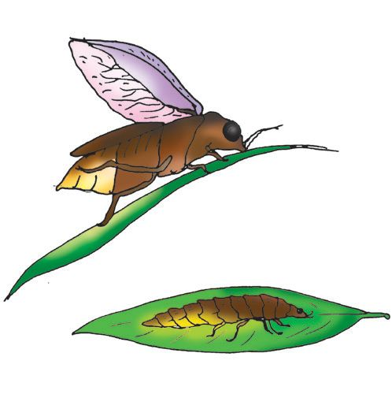
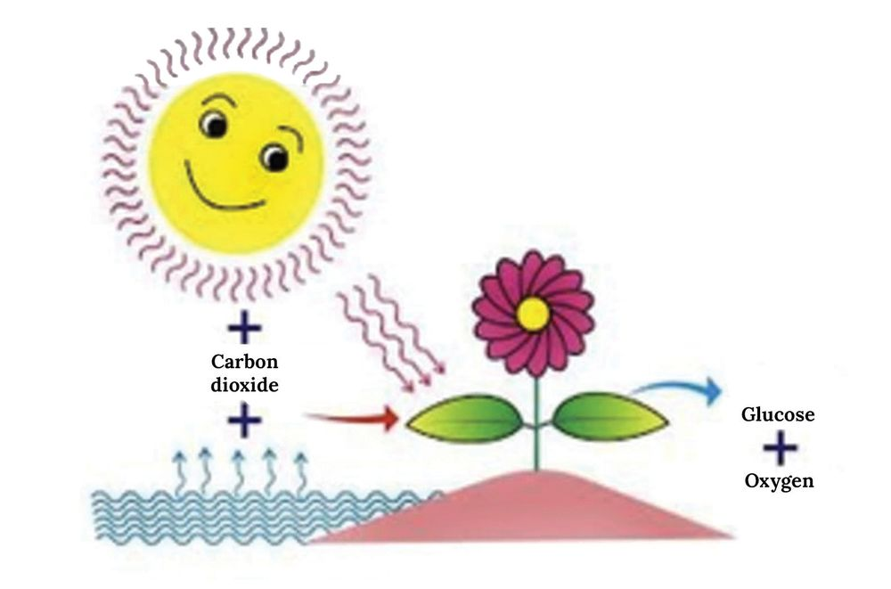
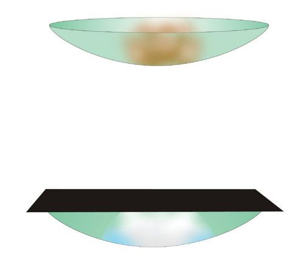
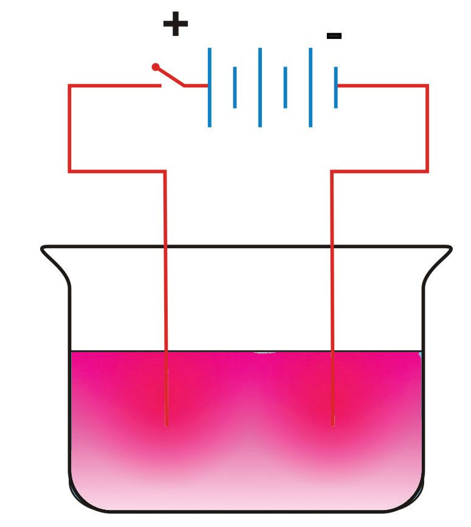
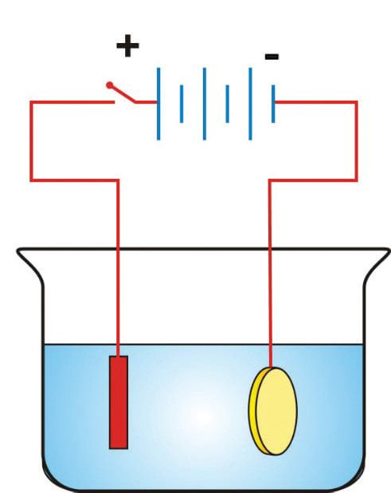

• A candle burning
• Food is cooked
•
•
Substances undergo different types of changes here. Don't they?
The stone is shaped into a sculpture and banana gets ripened. Are
these changes of the same kind ? One is man made and the other
is natural, isn’t it? If you look around you can observe so many
changes.
These changes may lead to the production of new substances.
51
We can see so many substances around us, which
undergo various changes. You know that these
substances are different forms of matter.
All substances in the universe are made of matter.
Let us discuss the chemistry of changes of matter after
understanding their general characteristics.
What are the characteristics of matter?
Let us examine them one by one.
a small stone
a bigger stone
Fig. 4.2
Dip a stone hung on a thread into a beaker with
marked water level. What happens to the water level?
Why does the water level rise?
What difference do you observe if a bigger stone is
used?
One of the properties of matter is that it occupies
space. The space occupied by matter is its volume.
Weigh both the stones using a balance.
What difference do you observe?
Matter has mass. This is another property of matter.
Mass of a substance is the measure of the quantity of
matter contained in it.
Is air a form of matter?
Fig. 4.3
52
Does air need space to occupy?
Page 53
Figure fig_ch03_p053_01 (Page 53)
BASIC SCIENCE - VIII
Fix a towel inside a glass and immerse it upside down
into the water taken in a beaker, as shown in the
figure 4.3.
Does the towel get wet?
Why doesn't water enter the glass?
What happens to the water level in the beaker?
The difference in water level indicates the volume of
air, right?
How can we find out whether air has mass?
Will the mass of a football without air be the same as
the mass of an inflated football? Check it out using a
digital balance.
Now it is clear that air has mass.
Anything that occupies space and has mass is called
matter.
From this we can understand that air is a form of
matter.
Matter exists mainly in three states.
Complete the given table with respect to the three
states of matter. Put ü mark appropriately.
Property
Solid
Liquid
Matter exists mainly in
three states viz: solid,
liquid and gas. But,
these three are not the
only states of matter.
The fourth state of
matter is Plasma. The
most abundant state of
matter in the universe
is plasma. The stars
and nebulae are in the
form of plasma. Plasma
is formed at very high
temperatures and
contains free ionised
particles. Scientists
have discovered
that matter exists in
various other states
at high and low
temperatures. BoseEinstein condensate,
Fermionic condensate,
etc. are examples for
these.
Gas
Has definite mass
Has definite volume
Has definite shape
Table 4.1
Different types of changes
Heat some wax in a steel vessel. What happens?
What happens when the liquid wax is cooled?
Wax (solid)
Wax (liquid)
53
Page 54
BASIC SCIENCE - VIII
We have seen that wax can be converted from solid to
liquid and vice versa.
But if a piece of paper is burnt to ash, can it be changed
to paper again?
Do all the changes occur at the same speed?
What is the approximate time taken for the germination
of a pea seed?
Doesn't it take a long time for the plant to grow and
blossom?
But, lighting of a gas stove and bursting of crackers
happen very quickly.
Find more examples for slow and fast changes.
Slow changes
Fast changes
•
•
•
•
•
•
•
•
•
•
Table 4.2
Physical Change and Chemical Change
What is the difference between the burning of a piece
of paper and the melting of wax? Do the chemical
properties of wax change when it melts? What happens
when a piece of paper burns? Burning of paper is
a chemical change and melting of wax is a physical
change.
No new substances are formed during a physical
change. Only the molecular arrangement
changes. But in chemical change, a substance
is converted into another one. That means,
new molecules are formed.
54
Page 55
BASIC SCIENCE - VIII
Classify the following changes into physical change
and chemical change.
i)
curdling of milk
ii)
melting of wax
iii) burning of a candle
iv) formation of ice
v)
vi) dissolution of salt in water
melting of ice
vii) rusting of iron
viii) burning of firewood
Take some ice in a bowl and heat it. What happens?
What happens if heating is continued? Water boils and
water vapour is formed.
You have learnt about the arrangement of particles
in different states of matter; i.e., solid, liquid and gas
in lower classes. Can you write about the distance
and force of attraction between the particles, speed
of movement and the energy of the particles in each
state in the following table?
Solid
Distance between
the particles
Gas
less than
solid
very
less
higher than
solid
very
high
very less
Attraction between
the particles
Speed of movement
of the particles
Liquid
very less
Energy of the
particles
Table 4.3
We have seen that particles are very close to each other
in solid state.
What happens to the distance between particles and
energy of particles when solids are heated?
55
Page 56
BASIC SCIENCE - VIII
Distance between the particles :
Energy of the particles
:
When a solid is heated, the distance between its
particles and their energy increases and gradually it
attains the particle arrangement of a liquid.
Solid
Absorbs
heat
Liquid
Absorbs
heat
Gas
When liquids are heated gradually, they become gases.
What happens when a gas is cooled ?
Gas
Liberates heat
Liquid
The distance between particles and the energy of
particles decreases. Gradually gas becomes liquid.
Liquid
Liberates heat
Solid
If we further cool a liquid, it becomes solid.
Solid substances like Camphor and Naphthalene
when heated, directly change to gases.
This is known as Sublimation.
How does the water kept in a freezer change to ice?
Discuss.
The change of substance from one physical state into
another is known as change of state.
Is change of state a physical change or a chemical
change?
Which form of energy is absorbed or liberated during
the change of state?
56
Page 57
BASIC SCIENCE - VIII
What happens to the energy of particles when heat is
absorbed or liberated?
Absorbs heat
Solid
Liberates heat
Absorbs heat
Liquid
Gas
Liberates heat
Illustration 4.1
Chemical Changes and Energy Change
Place some potassium permanganate crystals on
a tile and pour glycerine in the middle. Record your
observation.
Is the colour of potassium permanganate same before
and after the reaction?
Let us see.
Take water in two beakers and add two or three crystals
of fresh potassium permanganate into one of them.
Add two or three crystals of the product obtained in
the second beaker. Record the difference.
What is the change in colour you have observed?
Is it clear that new substances are formed as a result of
this reaction?
Is this a chemical change or a physical change?
The substances which take part in a chemical
reaction are known as reactants and the
substances formed are known as products.
57
Page 58
BASIC SCIENCE - VIII
Thermochemical Reactions
Take a piece of magnesium in a test tube and add dilute
hydrochloric acid into it.
What do you observe?
How will you identify the gas formed here?
If a burning match stick is brought near the mouth of
the test tube, the gas burns with a pop sound.
Which is this gas?
When magnesium reacts with dilute hydrochloric acid,
hydrogen gas is formed.
Touch the bottom of the test tube. What do you feel?
As a result of chemical reaction, heat is also produced
along with hydrogen, right?
What are the reactants of this reaction?
What are the products?
Let us do another activity.
Take quicklime in a steel cup. Add some water into it.
Touch the cup after sometime. What do you feel ?
What is the reason?
Quicklime + water
slaked lime + .................
If heat is liberated as a result of a chemical reaction,
such reactions are known as exothermic reactions.
Let us do another activity.
Take some potassium permanganate in a test tube and
heat it.
Hold a burning incense stick near the mouth of this
test tube. What do you observe?
Which gas helps flaring the incense stick?
58
Page 59

Figure fig_ch03_p059_01 (Page 59)
BASIC SCIENCE - VIII
Can you guess?
Potassium permanganate decomposes and
produces oxygen gas.
Which form of energy is used to decompose
potassium permanganate?
You have seen that one of the products is oxygen.
Let us do another activity.
Fig 4.4
Take some ammonium chloride in a watch glass, add
some barium hydroxide into it and mix well with a glass
rod. Touch the bottom of the watch glass.
What do you feel? Is heat energy absorbed or liberated
here?
If heat energy is absorbed during a chemical
reaction, it is known as an endothermic reaction.
Find more examples for such reactions.
Exothermic Reactions
Endothermic Reactions
• Reaction between potassium • Decomposition of
permanganate and glycerine potassium permanganate
• Reaction between
magnesium and
hydrochloric acid
• Reaction between
ammonium chloride and
barium hydroxide
•
•
Table 4.4
The reactions in which heat energy is liberated or absorbed
are known as thermochemical reactions.
Photochemical Reactions
Take some silver nitrate solution in a watch glass and
add sodium chloride solution into it. Dip two pieces of
cotton in the product formed. Cover one of them with
black paper and keep the other one open. Keep them
aside for some time. Record your observations.
59
Page 60

Figure fig_ch03_p060_01 (Page 60)

Figure fig_ch03_p060_02 (Page 60)

Figure fig_ch03_p060_03 (Page 60)
BASIC SCIENCE - VIII
Which form of energy is responsible for the colour
change?
The reactants, silver nitrate and sodium chloride react
to form silver chloride. This silver chloride decomposes
by absorbing light to form silver. This is the reason for
blackening of the cotton which is kept open.
Silver chloride
Silver + chlorine
Photosynthesis
Fig. 4.5
Which reaction is represented by the illustration 4.2 ?
Water
Illustration 4.2
What are the reactants here? What are the products?
The glucose produced here is converted to starch and
stored in different parts of the plant. Photosynthesis
is the process responsible for the existence of life on
earth.
Which form of energy is absorbed in photosynthesis?
In photsynthesis light energy is converted into
chemical energy.
Fig. 4.6
60
In both the reactions we discussed above, light energy
is absorbed.
Do you know any reactions which liberate light energy?
You might have seen the light of fireflies.
How do fireflies produce light?
The chemical luciferin absorbs ultra violet rays with
the help of the enzyme luciferase present in the body
of fireflies and emits visible light. This phenomenon
is known as bioluminescence. Firefly can control the
amount of oxygen entering its body and there by
regulate the intensity of light produced. Some species of
marine organisms and worms exhibit bioluminescence.
In these reactions light energy is liberated.
The reactions in which light energy is absorbed or
liberated are known as photochemical reactions.
• Some medicines are kept in brown coloured
bottles. What could be the reason?
• Silver nitrate is not stored in transparent bottles.
Why?
Electrochemical reactions
Look at the figures given.
Are you familiar with these objects?
They are known as dry cells.
Fig. 4.7
What is their use?
What are the parts of a dry cell?
Positive terminal
Insulation
Ammonium chloride paste
Carbon rod
Manganese dioxide + Carbon
powder
Zinc container
(Negative terminal)
Fig. 4.8
61
Page 62

Figure fig_ch03_p062_01 (Page 62)
BASIC SCIENCE - VIII
Electricity is produced as a result of chemical reaction
taking place in a dry cell.
In a dry cell chemical energy is converted
into electrical energy.
Let us do an activity.
Take some concentrated salt solution (sodium chloride)
in a beaker. Add three or four drops of phenolphthalein
into it. Dip the ends of copper wires connected to both
the terminals of a battery into the solution (figure 4.9)
What is your observation?
Which compound’s presence is indicated by pink
colour?
Fig. 4.9
When sodium chloride undergo dissociation, sodium
hydroxide is formed as one of the products. This turns
the solution pink.
Which form of energy is responsible for this reaction?
Here electrical energy is absorbed for the chemical
reaction.
The process of dissociation of a substance by
absorbing electrical energy is known as electrolysis.
If electricity is passed through water containing a small
amount of acid, it dissociates into hydrogen and oxygen.
Water
Hydrogen + Oxygen
Water dissociates by absorbing electrical energy.
Hence this process is electrolysis.
Many such reactions take place by absorbing electricity.
Haven’t you seen gold coated ornaments, spoons and
silver coated decorative materials?
62
Page 63

Figure fig_ch03_p063_01 (Page 63)
BASIC SCIENCE - VIII
How are they produced?
Let us coat copper on an iron bangle.
Check the diagram (figure 4.10)
Copper plate
Fig. 4.10
Iron bangle
Copper Sulphate
solution
Which solution is taken in the beaker?
To which terminal of the battery is the copper plate
connected?
What about the bangle?
When the circuit is switched on, do you notice the red
colour of copper on the iron bangle?
Which metal plate should be connected to the positive
terminal of the battery if silver is to be coated instead
of copper?
The metal to be coated must be connected to the
positive terminal of the battery.
The solution of the salt of the same metal dissolved in
water should also be used.
If silver is to be coated on iron bangle silver plate is to
be connected to the positive terminal of the battery
and a mixture of silver cyanide and sodium cyanide
solutions also is to be used.
63
Page 64
Figure fig_ch03_p064_01 (Page 64)
BASIC SCIENCE - VIII
• If gold is to be coated, gold plate is to be connected
to the positive terminal of the battery and a
mixture of gold cyanide and sodium cyanide
solution also is to be used.
Coating a metal with another metal using
electricity is known as electroplating.
Battery Made of Lemons
Fig. 4.11
Arrange zinc and copper nails on lemons as shown
in the figure. Connect them with copper wire. Then
connect this arrangement to an LED.
Which energy has caused the LED glow?
Which is the source of this electrical energy?
Here the acid in the lemons reacts with metals to
produce electricity.
If electrical energy is absorbed or produced
during a chemical reaction, it is
known as an electrochemical reaction.
Different forms of energy are absorbed or liberated in
every chemical reaction. Reactions are known by the
major form of energy involved in that reaction.
64
Page 65
Figure fig_ch03_p065_01 (Page 65)
BASIC SCIENCE - VIII
Chemical reaction
Major energy change
Burning of substances
Liberates heat
Decomposition of substances
on heating
Absorbs heat
Bioluminescence
Liberates light
Cell made up of lemon
Liberates electrical energy
Electrolysis of sodium chloride
solution
Absorbs electrical energy
Table 4.5
You have learned about the different states of matter and
the changes they undergo. Some of these changes help
to improve human life and some others do not. Discuss
in your class and write a note on the changes of matter
and how they affect human life.
Let us assess
1. What changes in the arrangement of particles occur
during the following situations?
a) Solid changes to liquid
b) Liquid changes to gas
c) Gas changes to liquid
2. Which is the main form of energy liberated/ absorbed
during the given reactions? Write the type of each of
these chemical reactions.
a) Ammonium chloride and barium hydroxide react.
b) Coating an iron bangle with copper.
c) Glowing of Firefly.
d) Decomposition of potassium permanganate.
e) Lighting an LED using lemons.
65
Page 66
Figure fig_ch03_p066_01 (Page 66)
BASIC SCIENCE - VIII
3. Heat some crystals of potassium permanganate in a
dry test tube. Bring a burning incense stick near the
mouth of the test tube.
a) What do you observe?
b) Which is the gaseous product formed?
c) Which type of reaction is this?
4. A white cloth dipped in silver nitrate darkens when
it is kept in sunlight.
a) Which form of energy is responsible for this
chemical change?
b) What is the general name for this type of reaction?
5. Sodium metal reacts with water to give new
substances.
a) Which are the reactants in this reaction?
b) Which are the products formed?
Extended Activities
1. Collect a little aluminium powder and iodine powder
from the science lab. Mix them well. Add two or
three drops of water to this mixture. Write the
observations.
2. Make a heap of ammonium dichromate powder
on a tile. Make a small pit in it and insert the
chemicals collected from matchsticks and ignite it.
Record the changes you see.